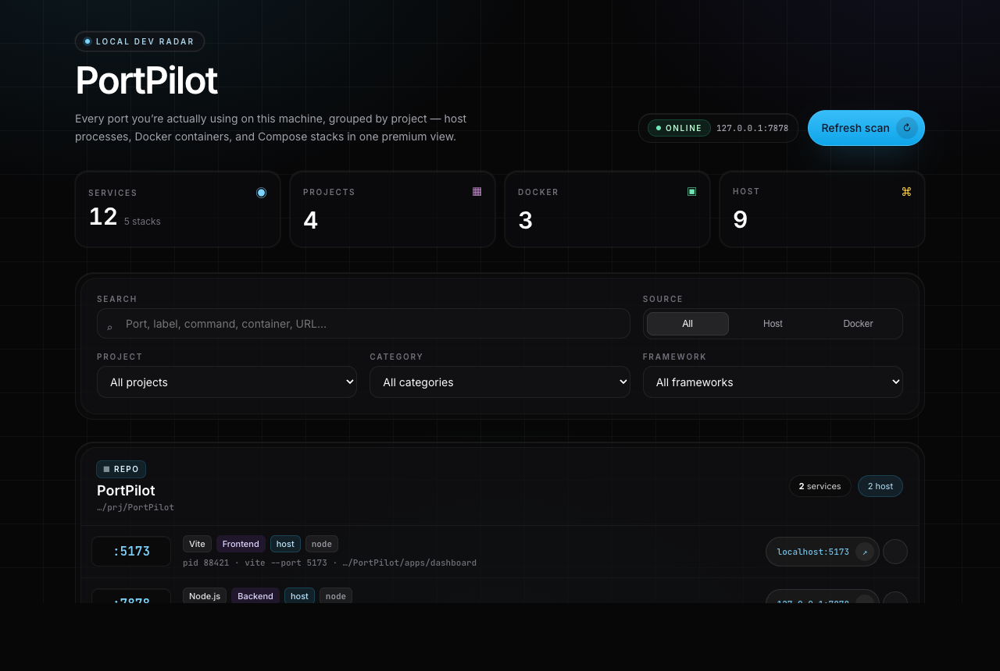
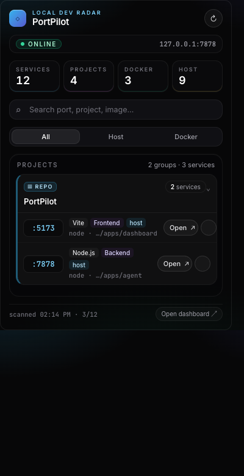

TCP listeners
Uses lsof on macOS and Linux to list
processes bound to ports—no guessing which dev server grabbed 3000.
Open source · MIT
A local port dashboard for developers: see what is listening on your machine and open services in one click.


Uses lsof on macOS and Linux to list
processes bound to ports—no guessing which dev server grabbed 3000.
Reads published container ports via docker inspect
when Docker is available; skipped cleanly if the daemon is not running.
Ports and services are classified and grouped with quick-open links so you can jump from overview to browser.
Use the Vite + React dashboard, the Chrome MV3 extension, or both against the same loopback API.
127.0.0.1:7878
Requires Node.js 18+, pnpm 9, and macOS or Linux with lsof.
# clone & install git clone https://github.com/davidix/PortPilot.git cd PortPilot pnpm install pnpm run build:shared # terminal 1 — API pnpm run dev:agent # terminal 2 — dashboard (e.g. http://localhost:5173) pnpm run dev:dashboard
Extension: build with pnpm run build --filter @portpilot/extension,
then load unpacked from apps/extension/dist.
The agent binds to loopback only, does not require sudo,
and optional process kill is off by default. See the repository README for CORS, env vars, and API details.